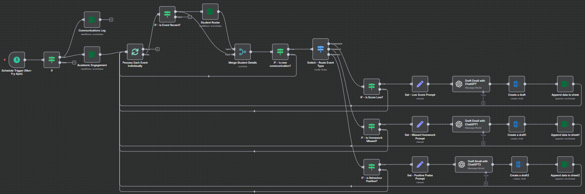

An intelligent n8n workflow that monitors student performance and behaviour, then uses an LLM to draft personalised, context-aware emails to parents — ready for a quick teacher review and send.
Type
AI & Automation
Stack
n8n · LLM · Excel · Outlook
Sector
Education
Impact
Proactive communication
The business challenge
Teachers spend significant time manually tracking student progress and initiating communication with parents. The process is reactive, inconsistent and time-consuming — especially with large classes. Opportunities for early intervention or positive reinforcement get missed, and the administrative overhead adds to workload and burnout.
The solution: an AI communication assistant
I built an automated workflow in n8n that acts as an AI-powered communication assistant. It connects to student data logs in Excel, identifies key events (such as low assessment scores, missed homework or positive behaviour), and uses an LLM to draft context-aware, personalised emails — saved as drafts in the teacher's Outlook for review.
The automated workflow
Scheduled trigger & data ingestion — runs each weekday afternoon, reading student rosters and engagement logs from multiple Excel sheets.
Filtering & event routing — filters recent events, checks a communications log to avoid duplicates, then routes each event by type (assessment, homework, behaviour).
Conditional logic & dynamic prompting — applies rules (e.g. scores below 60%, missed homework, positive notes) and constructs a tailored prompt instructing the model to write a supportive, professional email.
Generation & logging — the LLM produces the email, a draft is created in Outlook, and a record is appended to the Excel log to prevent duplicate messages.

The end-to-end n8n workflow.
Key outcomes & impact
Proactive, timely communication — parents are informed promptly about both concerns and achievements, strengthening the home–school partnership.
Reduced administrative burden — frees teachers from repetitive tracking and drafting, so they can focus on teaching.
Consistency & quality — a professional, supportive voice across all parent communications.
Data-driven intervention — real-time data triggers well-documented, relevant communications.
Better wellbeing — automating a demanding task directly reduces workload.